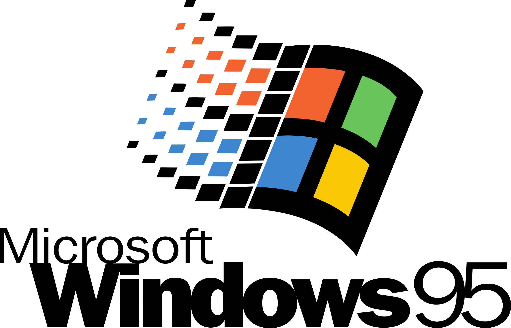

1991
Se introduce el protocolo HTTP y el lenguaje HTML.
1993

Marc Andreessen lanza el navegador Mosaic, el primer navegador web gráfico.
1994

Fundación de Yahoo! y Netscape Communications Corporation.
1995
Microsoft lanza Windows 95, que incluye el navegador Internet Explorer. Primera conexión Internet en África. El grupo informático Microsoft inicia una “guerra de navegadores” al lanzar Internet Explorer.
1996
El grupo finlandés Nokia lanza el primer teléfono móvil con conexión a Internet.
1998

Google es fundado por Larry Page y Sergey Brin.
2001

Lanzamiento de Wikipedia, una enciclopedia en línea colaborativa.